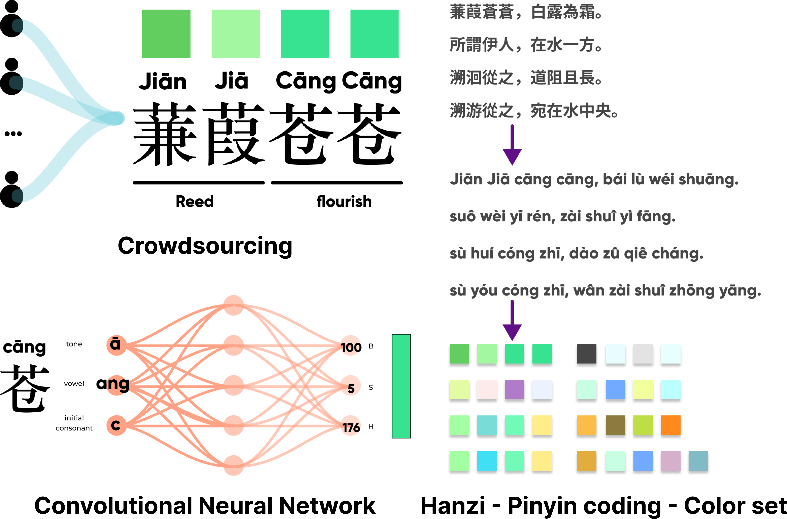

Shis-Ching is a classic poetry anthology in China. It features in intonation and rhythms. Here I visualized the data according to phonetic flux across characters and mapped this into a pexel art.

Shih-Ching, as a historic poetry anthonology, features in intonation and ryhtms. However, people have difficulty with phonetic aesthetic through acoustic contexts. We proposed a data visualization to translate the phonetic flux into a color-based pixel art.
Pictograph make sense of the characters culturally in a graphical way. For example, "蒹葭" means reed in Engligh, the "艹", shaped like grass growing out of the soil, acts as root to indicate its environment
Pinyin is a pronounciation system in China, it features tones, initial consonant, and vowel to represent the speaking.
With this, it delivers semantic and context through the embodied speaking process.
To realize this, I applied the crowdsourcing in Baidu's platform for expected semantic analysis.
We apply the generative model through the Convolutional Neural Networks for expected color examples.
We then preprocess the data from Chinese character-based poem into phonetic representation, and then into color cases

We applied the color onto the pixelFlow and generate further cases as follows.